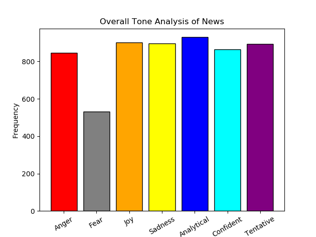

TONE ANALYSIS - WEB CRAWLER
Welcome to the Tone Analysis of News Headlines

Description About Our Project
This Project implements crawling of news websites and Tone Analysing the headlines from each website.The values are then consolidated as a bar graph plot.
News Channels Referred
-
NDTV
-
 Times Of India
Times Of India
-
The Indian Express
TONE ANALYSIS
-
IBM Watson API